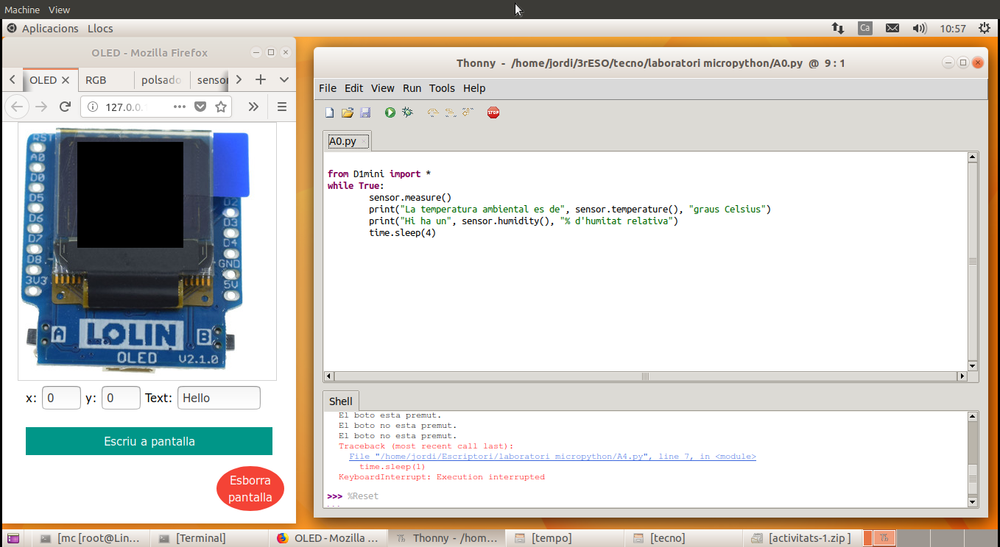
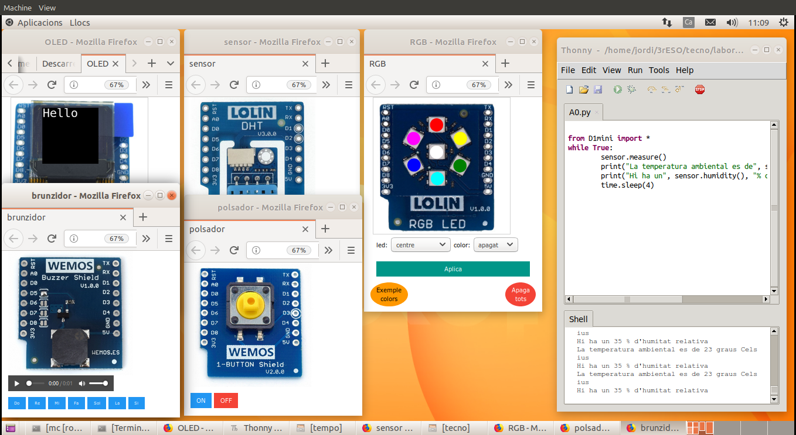

Per treballar més còmodament suggerim ajustar les mides de les finestres del navegador i del Thonny per visualitzar a la vegada el laboratori virtual i l'entorn de desenvolupament. Podeu tenir al navegador diverses pestanyes amb els mòduls virtuals amb que esteu treballant.
També podeu sepaar les pestanyes dels mòduls virtuals en diferents finestres del navegador arrosegant-les i ajustant la seva mida. És possible millorar la visibilitat canviant el zoom del navegador.
